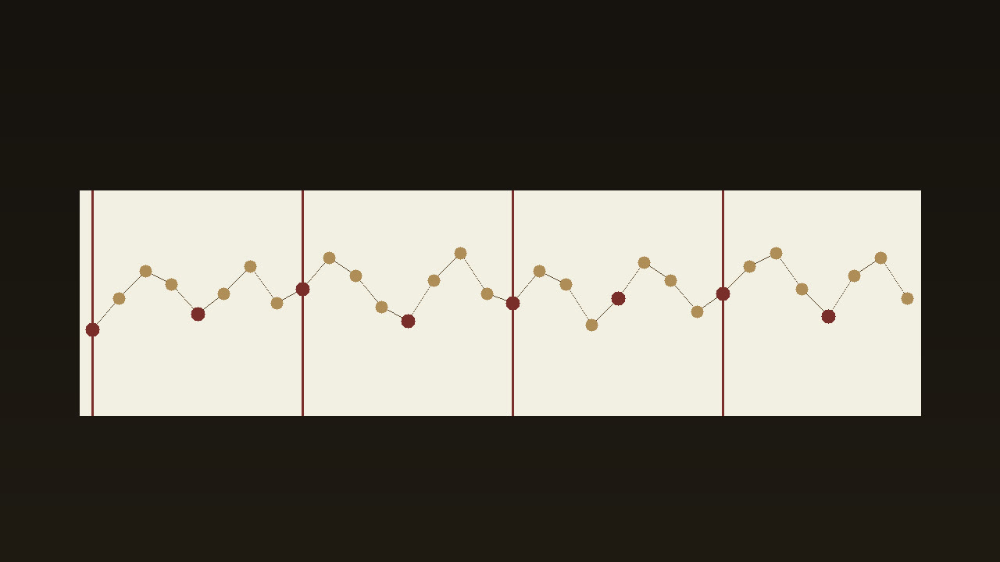

Eight studies · quarter notes over explicit changes
Stroll

Reading the MIDI.
Walking bass is monophonic, MIDI 28 to 55 (E1 to G3), standard four-string tuning EADG. Chord references are separate shells from MIDI 48 to 76 and are not part of the core count.
Stills lead to the social drafts. The catalog leads to this page. Article draft · plain text
Use either the combined arrangement or the separate parts. Do not stack the part files on top of the combined file.
Files
| Part | Role | Var | Count | BPM | Notes |
|---|---|---|---|---|---|
| s01.walk.a | walking-bass | a | core | 108 | 32 |
| s01.walk.b | walking-bass | b | core | 108 | 32 |
| s01.chords | chord-reference | ref | chord reference | 108 | 16 |
| s02.walk.a | walking-bass | a | core | 124 | 64 |
| s02.walk.b | walking-bass | b | core | 124 | 64 |
| s02.chords | chord-reference | ref | chord reference | 124 | 16 |
| s03.walk.a | walking-bass | a | core | 132 | 24 |
| s03.walk.b | walking-bass | b | core | 132 | 32 |
| s03.chords | chord-reference | ref | chord reference | 132 | 8 |
| s04.walk.a | walking-bass | a | core | 96 | 16 |
| s04.walk.b | walking-bass | b | core | 96 | 32 |
| s04.chords | chord-reference | ref | chord reference | 96 | 8 |
| s05.walk.a | walking-bass | a | core | 140 | 63 |
| s05.walk.b | walking-bass | b | core | 140 | 64 |
| s05.chords | chord-reference | ref | chord reference | 140 | 32 |
| s06.walk.a | walking-bass | a | core | 116 | 35 |
| s06.walk.b | walking-bass | b | core | 116 | 32 |
| s06.chords | chord-reference | ref | chord reference | 116 | 8 |
| s07.walk.a | walking-bass | a | core | 100 | 24 |
| s07.walk.b | walking-bass | b | core | 100 | 32 |
| s07.chords | chord-reference | ref | chord reference | 100 | 10 |
| s08.walk.a | walking-bass | a | core | 148 | 61 |
| s08.walk.b | walking-bass | b | core | 148 | 64 |
| s08.chords | chord-reference | ref | chord reference | 148 | 16 |
Recorded reading · study 01 variation A only
This MP3 is 17.78 seconds. preview, not a master. The film is 17.78 seconds and shows preview, not master.
No program changes are encoded. A conventional GM player will normally use its default piano program for pitched channels unless configured otherwise; compatible GM channel 10 percussion is treated separately. Player behavior may vary.
No human listening audition was performed for this build.
The GitHub repository is https://github.com/mizcausevic-dev/jazz-walking-basslines and it is public. The catalog page is https://mizcausevic-dev.github.io/jazz-walking-basslines/ .